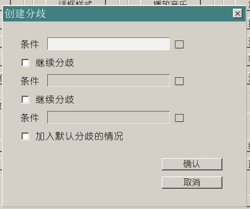
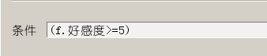
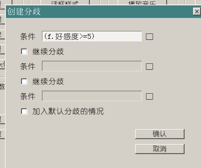

多路线电子小说
“根据选择或者其他操作，让游戏走向不同的剧情”是文字冒险游戏和一般的小说最大的区别之一。
例如恋爱游戏里，当某角色好感度高于90的时候，走向角色结局，否则就走向普通结局。
而实现这样效果的指令就是“条件分歧”，也就是“根据条件不同，执行不同的脚本段落”。
当好感度到达某个数值时……
还有一种常见的剧情设定，就是在选择之后剧情并没有什么特别的变化，但是到了后面某个地方，突然之前埋下的“地雷”就炸了。
例如说，在第一个事件里让角色的好感度下降了，
在出现第二个事件的时候，本来有三个选项可以选，但好感度不够，于是只显示了两个。
这种情况，就需要用到条件分歧了。
假设一下接下来就是这种情况。
如果f.好感度的值>=5，那么玩家就可以看到三个选项，否则的话就只能看到两个选项。
插入一个条件分歧
在第二个选择按钮下面新建一行，戳一下“变数系统-创建分歧”。

这里的条件要填什么呢。虽然可以猜得出来是“f.好感度>=5”，不过也不能这么蒙吧。
这个文本框后面有个□。在THE NVL Maker里，这就表示“你基本可以用鼠标来解决问题”，请继续往下看。
TJS条件生成器
为了避免看到TJS头大而导致的不会写条件或者条件写错，NVL提供了从图形化生成TJS条件式的功能。
填写这样的东西，应该没问题吧。

先别急着点确认，这里需要多一步：
点一下条件生成器最下方的这个按钮，查看一下系统自动生成的TJS条件式是不是对的。
没有问题，再点下“确认”。
在条件分歧的范围内，填写新的指令
因为没有其他的分歧情况，也没有“都不符合”的时候的默认分歧情况，所以就这样保持原样，点下确认就好了。
现在，我们已经成功地创建了一个非常简单的条件分歧，该是往里填内容的时候了。
在“条件分歧”和“条件分歧结束”中间，填写的指令只会在满足条件时才发生。
如上文所说，我们要做的：当满足“角色好感度大于等于5”这个条件时，增加一个选项。
所以接下来要做的，当然是在正确的地方插入选项按钮了。
最后，跑一次游戏测试？
注意下面的截图只有在好感度大于等于5的情况下才会出现哦。
条件分歧还能用来做什么？
答案是……咳咳，几乎所有的事。
下面就是两个简单的使用说明。
当游戏通关时，改变标题画面
NVL的标题画面配置文件名叫Data\macro\uititle.tjs。
假设我们复制一份编辑好的uititle.tjs，然后改名叫uititle1.tjs
接着通过NVL的界面编辑器继续修改uititle.tjs，那么我们手头就有了两个不同的标题画面配置文件。
当游戏通关时，设定某个sf变数，例如 sf.通关=1 。
接下来，在Data/scenario/title.ks里设定一个条件分歧，当 sf.通关 为1的时候，加载uititle1.tjs，否则的话还是和原来一样加载uititle.tjs。
模板工程的title.ks里就有范例的写法，去掉注释行即可使用。
你可能会疑惑模板工程里的代码看起来和上面说的不一样？——那是因为这里用的是TJS写法而不是KAG写法。
在需要执行的内容比较复杂的时候，TJS的写法要更简明一点。
通关后再次进行游戏时，追加隐藏人物的剧情
当游戏通关时，设定某个sf变数，例如 sf.通关=1 。
接着，在某段剧情里设定一个条件分歧，例如这样：
[if exp="sf.通关==1"]
[jump target="*隐藏人物剧情"];条件满足时执行这一行
[else]
[jump target="*正常主线剧情"];条件不满足时执行这一行
[endif]
那么当剧情执行到这里时，通关以后的玩家就能够触发隐藏人物剧情，而未通关玩家看到的就是正常主线了。
请注意这里的条件分歧比之前说的选项多了一种情况，那就是“不满足条件”的情况。这是用指令[else]来表示的。
每个条件分歧都必须要有[if]（条件分歧）和[endif]（条件分歧结束）指令。
至于[else]（不满足条件，也就是默认分歧的情况）和[elsif]（不满足[if]条件，继续判断是否满足其他条件，也就是继续分歧的情况）则是可选的。
实际上，对于新手来说，只要能掌握[if]和[endif]就够了，其他的情况都可以用多个分开写的[if]和[endif]来实现，所以看不懂上面这行也没多大关系啦。